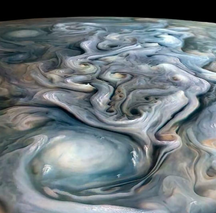
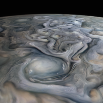
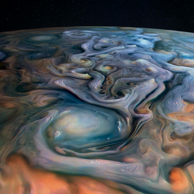

I came across this cool image of Jupiter on reddit.

Using reverse image search, I couldn't find where it came from, except that it was a picture from the NASA Juno mission. So I searched the NASA website and found a sharper but less colourful version:

You can find it on the NASA Juno website.
Turns out it isn't really a photo.
It uses real space photos, but a software engineer/ data and image processor at NASA by the name of Kevin Gill maps those images onto 3D models. The relief is exaggerated by raising the bright spots and sinking the dark spots. Looks extremely cool, if you ask me.
Since these images are already heavily edited, I took the liberty of turning it up to 11. In GIMP, I increased the saturation and contrast, then also increased the colour temperature of the nearby clouds and decreased the colour temperature of the far away parts. Then I used a neural network image scaling tool to intelligently double the resolution and make the image usable as a desktop background.

You can click the image to see it in full size.
I'm quite satisfied with the result. However, I also wanted to create something original from the raw NASA data and came up with this:
The input images can be found here.Aside from changing the colours, rotating, cropping, and adding a background image, I also added some extra depth to the clouds by shifting the lighter tones by a few pixels.
This looks heavily manipulated, but it's less edited than most scientific pictures. In space imagery, art and science just go hand in hand.
Image rights: Creative Commons
{% endblock %}{kind=link}